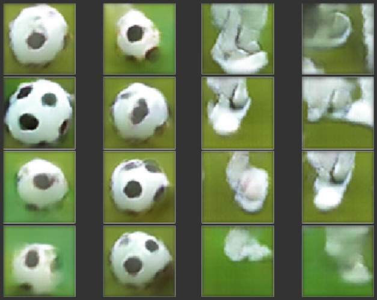

@artifactz
➤ #berlin #asteroids #read #visuals #self-organizing-maps #gans #conway
Berlin Operator
An interactive map that shows the real-time position of public transport vehicles in Berlin. Share your trip with friends, track vehicles, and explore the city.

Asteroids
A browser game about shooting asteroids with lasers. Featuring realtime Constructive Solid Geometry (CSG) destruction, lighted dust particles, and an online high score list with your name missing on it.
Read for Speed
A web service that guides your gaze across text documents to increase concentration and speed up reading by emphasizing the beginnings of words.
Visuals
Structures that react to sound.
Self-organizing maps
The travelling salesman problem can be approximated with a self-organizing map by mapping 2D coordinates to a 1D modular arithmetic.
GANs
Generative adversarial networks (GANs) can be used to augment datasets for deep learning purposes: If there's not enough training data, just generate some more. The image below shows samples generated for training a ball/robot classifier.
View paper Google Colab Download dataset
Conway's Continuous Game of Life
A fresh take on Conway's Game of Life. But this time, it's in continuous space.